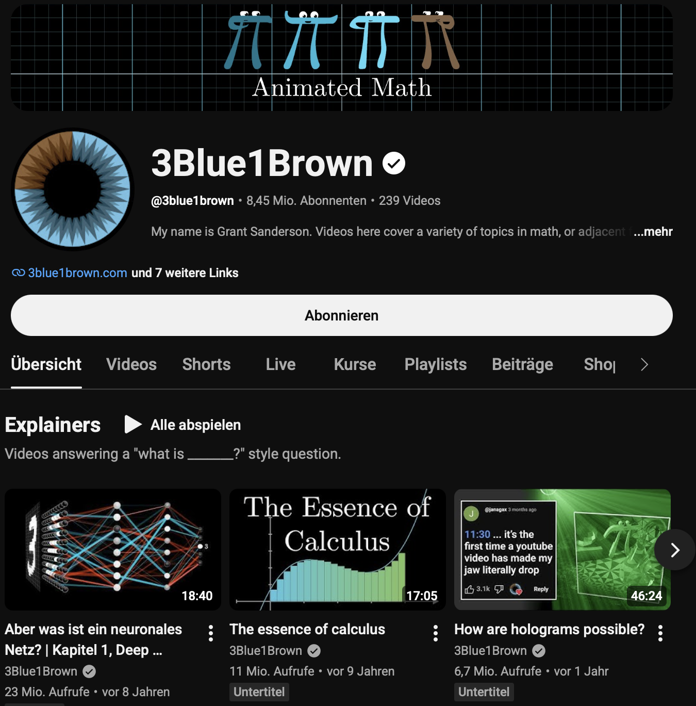

Code Coffee seminar
A compact introduction to making math/astro animations in Python.
Outline:
Manim is a Python library for programmatic animations.
Good for:

scene.py → Manim render → .mp4, .gif, or image
Objects (Mobjects) live in a Scene. You create them, animate them, update them, and render frames.
Use a project environment so your animations are reproducible.
Note: there needs to be also a working LaTeX installation for some features, e.g., Text and MathTex and ffmpeg for video rendering.
Here is the pixi.toml I used
A Manim file contains one or more Scene classes.
Useful flags:
| Flag | Meaning |
|---|---|
-p |
open the video after rendering |
-ql |
low quality, fast preview |
-qm |
medium quality |
-qh |
high quality |
Note: there are also VS Code extensions or Jupyter magicks, see below.
Write, then FadeIn/Create).
A scene is just a Python class with a construct() method.
To render the scene from a Jupyter notebook, you can use this cell magic:
Mobjects
Visual objects:
Dot, Circle, Line, Text, Axes, VGroup
Animations
Actions over time:
Create, FadeIn, Transform, MoveAlongPath, .animate
Updaters
Frame-by-frame logic:
ValueTracker, always_redraw, TracedPath
from manim.utils.rate_functions import ease_out_bounce
class Basic(Scene):
def construct(self):
circle = Circle().shift(4*LEFT)
square = Square()
self.play(Create(circle))
self.play(circle.animate.shift(UP), run_time=4)
self.play(circle.animate.move_to(UP))
self.play(
circle.animate.to_edge(DOWN, buff=0),
rate_func=ease_out_bounce)
self.play(Create(square), circle.animate.next_to(square, RIGHT))
self.wait()See also:
We create a ValueTracker to hold a single time-dependent parameter. The always_redraw wrapper keeps the dots in sync with the tracker. Thus, tracker is the single variable that drives the whole animation.
class Basic(Scene):
def construct(self):
tracker = ValueTracker(0)
dot1 = always_redraw(
lambda: Dot().move_to(RIGHT * tracker.get_value())
)
dot2 = always_redraw(
lambda: Dot().move_to(LEFT * tracker.get_value())
)
self.add(dot1, dot2)
self.play(tracker.animate.set_value(3), run_time=3)
self.wait()
self.play(tracker.animate.set_value(5), run_time=3)We can also use an updater to move the dots. The updater is called every frame, and the dt argument is the time since the last frame. This is a more general approach than ValueTracker, but it requires more care to avoid runaway motion.
class Basic(Scene):
def construct(self):
dot1 = Dot().move_to(RIGHT)
dot2 = Dot().move_to(LEFT)
def move_right(mob, dt):
mob.shift(2 * dt * RIGHT)
def move_left(mob, dt):
mob.shift(2 * dt * LEFT)
dot1.add_updater(move_right)
dot2.add_updater(move_left)
self.add(dot1, dot2)
self.wait()
dot1.clear_updaters()
self.wait()A VGroup is a collection of mobjects that can be treated as a single object. You can move, scale, or rotate the group, and all the members will follow.
class C2PExample(Scene):
def construct(self):
axes = Axes(
x_range=[0, 10, 1],
y_range=[0, 100, 20],
x_length=7,
y_length=4,
axis_config={"include_numbers": True},
)
axes.to_edge(DOWN)
point = axes.c2p(4, 60)
dot = Dot(point, color=YELLOW)
label = Text("(4, 60)", font_size=24).next_to(dot, UR)
vg = VGroup(axes, dot, label)
self.play(Create(axes))
self.play(FadeIn(dot), Write(label))
self.wait()
self.play(vg.animate.shift(UP), run_time=2)c2p.
VGroup to treat the axes, dot, and label as a single object.
A simple scene with:
Render:
File: examples/orbit_basics.py
"""OrbitBasics: a first astronomy-themed Manim scene.
Render with:
manim -pql orbit_basics.py OrbitBasics
This example avoids LaTeX so it should work with a minimal Manim install.
"""
from manim import *
import numpy as np
config.background_color = "#0B1020"
class OrbitBasics(Scene):
def construct(self):
title = Text("Orbit from simple geometry", font_size=34)
title.to_edge(UP)
orbit_radius = 2.2
angle = ValueTracker(0)
orbit = Circle(radius=orbit_radius, color="#6C7A89", stroke_width=2)
sun = Dot(ORIGIN, radius=0.22, color="#FDB813")
sun_glow = Circle(
radius=0.38,
color="#FDB813",
stroke_width=6,
stroke_opacity=0.25,
)
def planet_position():
a = angle.get_value()
return orbit_radius * np.array([np.cos(a), np.sin(a), 0.0])
planet = always_redraw(
lambda: Dot(point=planet_position(), radius=0.09, color="#6EC6FF")
)
radius_line = always_redraw(
lambda: Line(ORIGIN, planet_position(),
color="#6EC6FF", stroke_width=2, stroke_opacity=0.55,
)
)
trail = TracedPath(planet.get_center,
stroke_color="#6EC6FF", stroke_width=3)
note = Text(
"A ValueTracker drives the angle;\nobjects update every frame.",
font_size=24,
line_spacing=0.9,
)
note.to_corner(DL)
self.play(Write(title))
self.play(Create(orbit), FadeIn(sun_glow), FadeIn(sun))
self.add(radius_line, trail, planet)
self.play(
angle.animate.set_value(TAU),
run_time=6, rate_func=linear)
self.play(FadeIn(note, shift=UP * 0.2))
self.wait()ValueTracker is the single time-dependent parameter.
ValueTracker in a function to compute positions.
always_redraw keeps the planet synced with every frame.
TracedPath leaves a visible orbital history based on the function you pass. You can also set dissipating_time to fade the trail.
This example connects two things students often see separately:
Render:
def relative_flux(phase: float) -> float:
"""Toy transit model: flat-ish dip near phase zero."""
...
phase = ValueTracker(-1.15)
curve = axes.plot(
relative_flux,
x_range=[-1.15, 1.15, 0.01],
color="#6EC6FF",
stroke_width=4,
)
moving_point = always_redraw(
lambda: Dot(
point=axes.c2p(phase.get_value(), relative_flux(phase.get_value())),
radius=0.055,
color="#FFFFFF",
)
)phase tracker drives geometry and photometry.
File: examples/exoplanet_transit.py
self.play(Write(title))
self.play(FadeIn(star), FadeIn(star_label), FadeIn(planet_label))
self.play(Create(axes), Write(x_label), Write(y_label), Create(curve))
self.add(planet, moving_point)
self.play(phase.animate.set_value(1.15), run_time=6, rate_func=linear)
self.play(FadeIn(explanation, shift=UP * 0.2))
self.wait()Create will animate a “build up” of the curve.
always_redraw objects will follow along. The rate function linear is uniform motion.
This scene shows how nearby stars appear to shift as Earth moves around the Sun.
The example is qualitative, not a full astrometric model.
"""StellarParallax: apparent motion of a nearby star against distant stars.
Render with:
manim -pql stellar_parallax.py StellarParallax
This is a qualitative outreach visualization, not an astrometric model.
"""
from manim import VGroup, Scene, Dot, Line, ValueTracker, always_redraw, config
from manim import UL, RIGHT, DOWN, LEFT, UP, linear
import numpy as np
import random
config.background_color = "#0B1020"
class StellarParallax(Scene):
def construct(self):
random.seed(3)
timer = ValueTracker(0)
stars = VGroup()
inc = ValueTracker(0)
# add angle indicator
corner = Dot().to_corner(UL).shift(RIGHT * 0.7 + DOWN * 0.7).get_center()
length = 0.5
line1 = Line(corner, corner + length * RIGHT)
line2 = always_redraw(lambda: Line(
corner, corner + length * (np.cos(inc.get_value()) * RIGHT + np.sin(inc.get_value()) * UP)))
self.add(line1, line2)
for _ in range(120):
# Random starting position
x = random.uniform(-7, 7)
y = random.uniform(-4, 4)
# Random "depth": small = far, large = near
depth = random.uniform(0.1, 0.5)
star = Dot(point=[x, y, 0], radius=0.015 + 0.025 * depth)
start = star.get_center()
# Each star follows the same tracker, but nearby stars move more.
star.add_updater(
lambda mob, start=start, depth=depth: mob.move_to(
start + depth * LEFT * np.sin(timer.get_value()) +
depth * np.sin(inc.get_value()) * UP *
np.cos(timer.get_value())
)
)
stars.add(star)
self.add(stars)
self.play(
timer.animate.set_value(20 * np.pi),
inc.animate.set_value(np.deg2rad(90)),
run_time=12,
rate_func=linear
)
self.wait()manim is a powerful tool for creating precise, reproducible animations in Python.
By understanding the core concepts of Mobjects, Animations, and Updaters, you can create complex visualizations that effectively communicate mathematical and astronomical ideas.
It does not take away the work of creating the content, but it makes it easier to animate a plot with high-quality animations.
Let me know what you created with Manim!
Happy to chat and share.